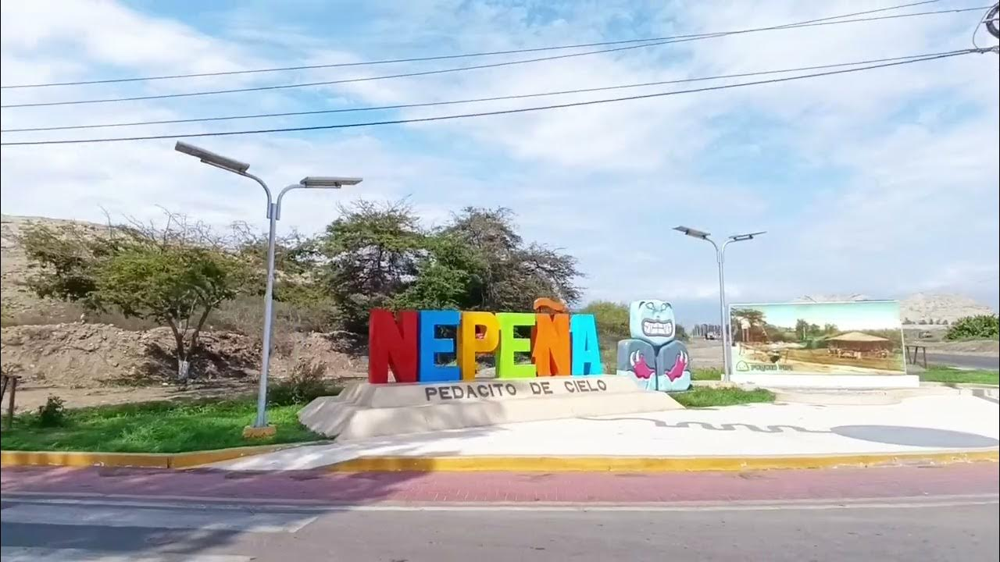

El distrito de Nepeña se alza majestuoso en la provincia del Santa, combinando un pasado milenario lleno de culturas preincaicas con una próspera actividad agrícola. Este espacio digital ha sido diseñado para mostrar la riqueza inigualable de nuestro territorio.
